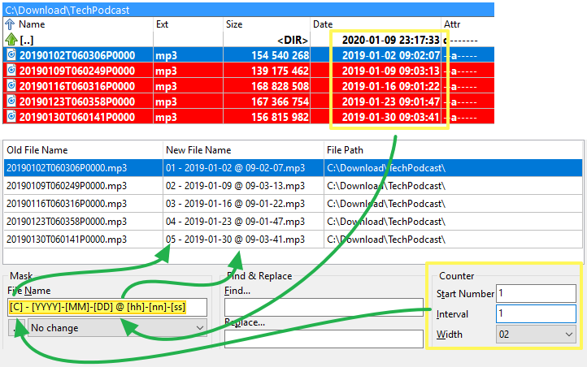
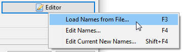
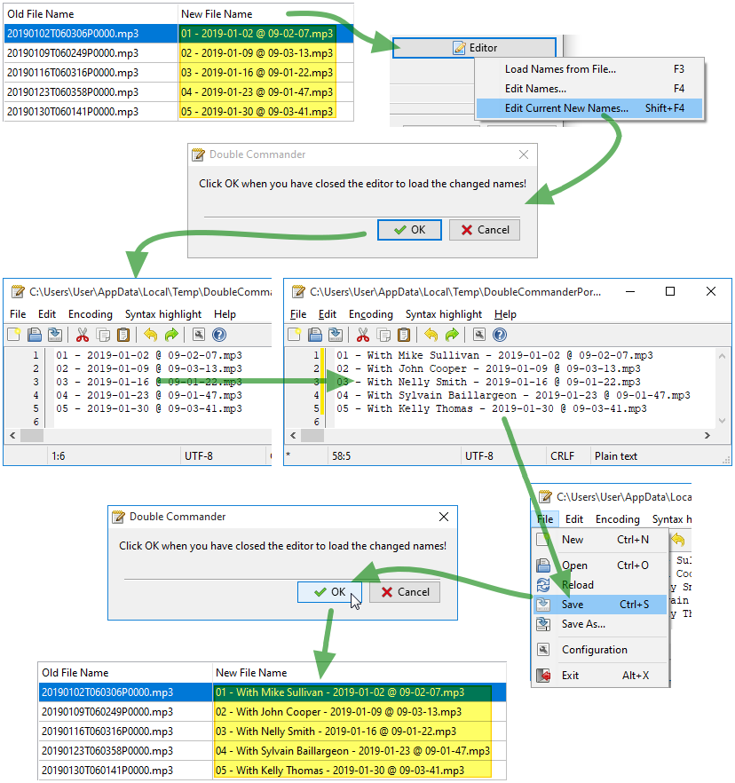
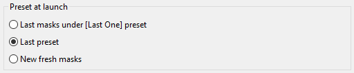
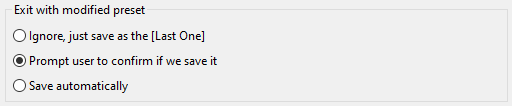

The Multi-Rename Tool allows us to rename many selected files at once using different means.
If we're not familiar with the Multi-Rename Tool, prior to actually explore it, it would be wise to make some tests with copies of actual files into a temporary directory.
Then, when we get the idea, we may use the Multi-Rename Tool with actual files.
Let's suppose we've downloaded a bunch of podcast MP3 files.
We might want to rename them to get a significant name for each.
This is where the Multi-Rename Tool will be useful as it will help us to rename these multiple files in one action.
We will select the elements we want to rename from a panel.
Then we invoke the Multi-Rename Tool either from
This will get us to the Multi-Rename Tool dialog window like the following:

On top we see a table with the files we've selected from source panel, one file per row, and about to be renamed.
The table has three columns:
| Multi-Rename Tool file name preview table | |
|---|---|
| Column name | Description |
Old File Name | The current name of the file the row is representing |
New File Name | What would be the new file name if we confirm the rename |
File Path | Current location of file |
The idea is to do some manipulation until the New File Name column shows us the actual new file names we want.
Then we will press the Rename button to actually rename the files.
We have tools at our disposition to generate the new file names we wish.
| Possible tools | |
|---|---|
| Category | Description |
Placeholders | Use current part of the filename, its properties, or its content to generate part of the new names |
File lists | A text file with names, one per line, to apply sequentially to each and every file in same order |
Modifiers | Modify resulting characters of the eventual new names resulting from the above elements |
Let's see the placeholders we may use.
We define them in the box we have on left labeled Mask.
As we see, we define what will be used to form the File name and the Extension for our new wanted name.
These placeholders are defined between square brackets.
Generally, each of these placeholders will return us a string that will be part of either the file name or its extension we want to create.
We may define more than one in row and new part of filename will be the result of the concatenation of all these.
The basic placeholders are the following:
For these two we may include some placeholders to delimit a range of characters from the file name and/or extension that will be used.
Let's see a table showing the result based on this sample file:

| Possible placeholders | ||
|---|---|---|
| Placeholders | Description | Example |
[Nx] | character is position x of the file name | [N9] = T |
[N-x] | same thing but count first from the end of the file name Version 1.0.0 + | [N-5] = P |
[Nx:y] | range of characters from position x to y in the file name | [N5:6] = 01 |
[N-x:-y] | same thing but counting from the end of the file name Version 1.0.0 + | [N-6:-7] = 06 |
[Nx:-y] | same thing but count first from the start and the last from the end Version 1.0.0 + | [N10:-6] = 060306 |
[N-x:y] | same thing but count first from the end and the last from the start Version 1.0.0 + | [N-16:6] = 01 |
[Nx,y] | character range will start at x and be y characters in length Version 1.0.0 + | [N10,6] = 060306 |
[N-x,y] | same thing but count first from the end and picking y characters going left Version 1.0.0 + | [N-8,4] = 0603 |
[Ex] | character is position x of the extension | [E1] = m |
[E-x] | same thing but count first from the end of the extension Version 1.0.0 + | [E-1] = 3 |
[Ex:y] | range of characters from position x to y in the extension | [E2:3] = p3 |
[E-x:-y] | same thing but counting from the end of the extension Version 1.0.0 + | [E-3:-2] = mp |
[Ex:-y] | same thing but count first from the start and the last from the end Version 1.0.0 + | [E1:-2] = mp |
[E-x:y] | same thing but count first from the end and the last from the start Version 1.0.0 + | [E-2:3] = p3 |
[Ex,y] | character range will start at x and be y character in length Version 1.0.0 + | [E1,3] = mp3 |
[E-x,y] | same thing but count first from the end and picking y characters going left Version 1.0.0 + | [E-1,2] = p3 |
Just to make sure we got the idea, here is an example where we've set the mask for the filename to [N1,4]-[N5,2]-[N7,2]
We see that the New File Name column has been updated following the aboved described substitutions.
Here are some other place holders, still with the same sample file:
| Other placeholders | ||
|---|---|---|
| Placeholders | Description | Example |
[A] | stands for the complete file name which include the whole path, path delimiters, extension, colon and period included Version 1.0.0 + | [A] =Complete filename |
[A...] | range may be specified like previously [Ax], [Ax:y], [A-x:-y], etc... Version 1.0.0 + | [A-9:-5] = P0000 |
[Y] | the year of the file date expressed by its last 2 digits | [Y] = 19 |
[YYYY] | the year expressed on 4 digits | [YYYY] = 2019 |
[M] | the month number of the file date, straight | [M] = 1 |
[MM] | the month number padded with a zero to fit on 2 digits if necessary | [MM] = 01 |
[MMM] | abbreviation of the month like "jan", "feb", "mar", etc. | [MMM] = Jan |
[MMMM] | complete month name like "january", "february", etc. | [MMMM] = January |
[D] | the day number of the file date, straight | [D] = 2 |
[DD] | the day number padded with a zero to fit on 2 digits if necessary | [DD] = 02 |
[DDD] | abbreviation of the day like "mon", "tue", "wed", etc. | [DDD] = Wed |
[DDDD] | complete day name like "monday", "tuesday", etc. | [DDDD] = Wednesday |
[h] | the hour number of the file time, straight | [h] = 9 |
[hh] | the hour number padded with a zero to fit on 2 digits if necessary | [hh] = 09 |
[n] | the minute number of the file time, straight | [n] = 2 |
[nn] | the minute number padded with a zero to fit on 2 digits if necessary | [nn] = 02 |
[s] | the second number of the file time, straight | [s] = 7 |
[ss] | the second number padded with a zero to fit on 2 digits if necessary | [ss] = 07 |
[G] | a GUID form on the fly of the form: {XXXXXXXX-XXXX-XXXX-XXXX-XXXXXXXXXXXX} Version 1.0.0 + | [G] =A 16-bytes GUID |
[Px] | directly name a x-level of complete path counting first near the root Version 1.0.0 + | [P2] = TechPodcast |
[P-x] | directly name a x-level of complete path counting first near the file name Version 1.0.0 + | [P-2] = Download |
[C] | an autoincrementing counter for each iteration of using parameters of box "Counter" | [C] =Numberincrementing for each file |
[V:hint] | a user define variable "hint" that will be prompt to user at actual rename process Version 1.0.0 + | [V:Guest] = PromptGuest's value |
Here is another example where we've used some of the above placeholders setting the mask to
[C] - [YYYY]-[MM]-[DD] @ [hh]-[nn]-[ss]

With time, if used often, we'll type from memory what we need!
Waiting for that, luckily, we may press the button below each mask and then access a popup menu that will help us to have the application type it for us based on what we need.

We may also use a placeholder that will a content plugin.
It will extract from the file the selected field and use it as part of the new name we want.
Following example use a multimedia plugin to extract the length time of MP3 podcast file to place it in the filename between parentheses in the name:

We may also use a text file containing a list of file names to rename our files.
It will be assumed that each line of that text file holds the new file name, extension included, to give to the matching file in the same position order.
This list may
If we already have such file, we'll press the Editor button and Load names from file.

Then we'll be prompted to indicate our file list.
If the file holds the same number of lines as the number of elements to be renamed, we'll see in the New File Name column what would be the new file name for each file.
The actual renaming process will take place only when we'll press the Rename button.
Similar to the above described Existing list, Double Commander may offer us on the fly to create this file list.
Pressing the Editor button and then Edit names... will have the tool create a temporary text file based on the original file names that will be used like the previous point.
Same as above except that file names in the list are coming from the current New File Name column.
This method may be particularly helpful in case the placeholders method gives us "almost" the file names we want so we just have to make some touch-ups to correct the ones that needs to fill our need.
Following example shows us the flow of event when using this method.

Still respecting and applied after the above mentionned placeholders and file list, we may apply modifiers to alter what would be the new file names.
These modifiers include:
The possible options are the following and will affect the case of the characters of the new file names:
Even if this modifier is inside the Mask box, it will be applied also if the file names are coming from a list.
We may search for a single sequence of characters in the string and replace them by another one.
But we may also replace different sequences by a single one, by placing the sequences between pipes like this example where 2020 will replace any occurence of 2017, 2018 or 2019:

We may also define more than one pair of sequences by placing them between pipes.
Each sequence to search will have its replacement defined in the same position.

We also have the possibility to use regular expressions for the search part of string as well as for its substitution.

When we have defined all the New File Names we want with the above mentioned methods, we're ready to launch the actual Rename action.
After the rename process, the application will rescan the files and refill again the above table.
The Old File Name column will normally show the result of our renaming process.
The New File Name one will be refreshed as well by re-applying the same placeholders/lists/modifiers still defined.
Normally, we should then pay attention more on the first column one since it represents the new actual file names that we've just renamed.
Application can create a log file, or append to an exiting one, with the result of all the renaming attempts that took place when launching the actual rename.
It might be useful later if we search the original file name or something we would inadvertently renamed.
We may need to re-use the same placeholders/modifiers for the same type of multi-renaming as we did on a previous session.
Instead of having to keep retyping the same configuration we would already done over and over, we may save a current configuration in preset and then re-use it later.
To do that, we click the button giving access to actions associated with the presets and select Save as....
We give a significant name and we now have added a kind of configuration in our preset.
Next time we need it again for a batch rename, we will click the preset drop box, select our preset and then fields will be filled with what we've saved.
The menu mentionned offers us various actions related with the presets regarding actions like loading them, saving them, renaming them, deleting them, sorting them, etc.(Version 1.0.0 +)
In the configuration pages, additional settings related with the Multi-Rename Tool are present in a dedicated page.

If we prefer to have a menu bar on top of the window giving us access to all pertinent function and view them in a menu, we check this option.
It might happen that with our adjustments, an invalid character for a filename would appear in the resulting name of a file.
To avoid generating an error, Double Commander will replace that invalid character by what we will enter in this box.
If we wish to simply strip the invalid characters, we let this box empty.
This setting determines what will be the default preset loaded each time we invoke the Multi-Rename Tool.

If we've loaded an existing preset, that we've changed at least one setting and then attempt to quit the Multi-Rename Tool window without haven't saved our modified preset, this option will determine the behavior of Double Commander.

These settings help to determine how to handle the saving of renaming log file.
By legacy, each renaming log file was defined in each preset.
But with option here, we may instruct Double Commander to save these logs into the single location defined there where the result of each rename action will be appended into a rename log file.
We may define to store the log into individual directory per day.